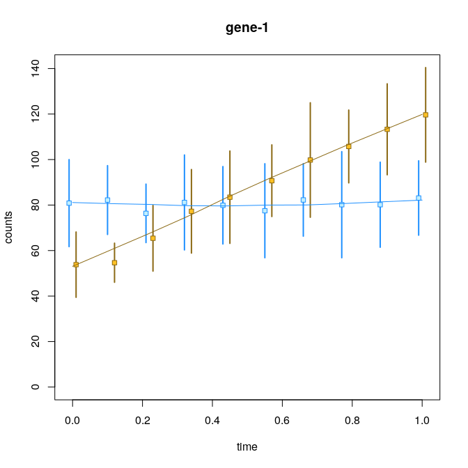
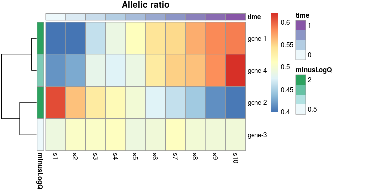

Allelic expression analysis with Salmon and Swish
03/18/2022
Source:vignettes/allelic.Rmd
allelic.RmdLinking transcripts to TSS
suppressPackageStartupMessages(library(ensembldb))
library(EnsDb.Hsapiens.v86)
library(fishpond)
edb <- EnsDb.Hsapiens.v86
t2g <- makeTx2Tss(edb)
mcols(t2g)[,c("tx_id","group_id")]## DataFrame with 216741 rows and 2 columns
## tx_id group_id
## <character> <character>
## ENST00000456328 ENST00000456328 ENSG00000223972-11869
## ENST00000450305 ENST00000450305 ENSG00000223972-12010
## ENST00000488147 ENST00000488147 ENSG00000227232-29570
## ENST00000619216 ENST00000619216 ENSG00000278267-17436
## ENST00000473358 ENST00000473358 ENSG00000243485-29554
## ... ... ...
## ENST00000420810 ENST00000420810 ENSG00000224240-2654..
## ENST00000456738 ENST00000456738 ENSG00000227629-2659..
## ENST00000435945 ENST00000435945 ENSG00000237917-2663..
## ENST00000435741 ENST00000435741 ENSG00000231514-2662..
## ENST00000431853 ENST00000431853 ENSG00000235857-5685..Testing for allelic imbalance across samples
set.seed(1)
y <- makeSimSwishData(allelic=TRUE)A hidden code chunk is used to add ranges from the EnsDb to the simulated data set. For a real dataset, the ranges would be added either by importAllelicCounts (if using tx2gene) or could be added manually for transcript- or gene-level analysis, using the rowRanges<- setter function. The ranges are only needed for the plotAllelicGene plotting function below.
We can already plot a heatmap of allelic ratios, before performing statistical testing.
y <- computeInfRV(y) # for posterior mean, variance
gene <- rowRanges(y)$gene_id[1]
idx <- mcols(y)$gene_id == gene
plotAllelicHeatmap(y, idx=idx)
Plotting results
We can return to the heatmap, and now add q-values, etc.
dat <- data.frame(minusLogQ=-log10(mcols(y)$qvalue[idx]),
row.names=rownames(y)[idx])
plotAllelicHeatmap(y, idx=idx, annotation_row=dat)
par(mfrow=c(2,1), mar=c(1,4.1,2,2))
plotInfReps(y, idx=1, x="allele", cov="sample", xaxis=FALSE, xlab="")
plotInfReps(y, idx=2, x="allele", cov="sample", xaxis=FALSE, xlab="")
gene <- rowRanges(y)$gene_id[1]
plotAllelicGene(y, gene, edb)
plotAllelicGene(y, gene, edb,
transcriptAnnotation="transcript")
Testing for dynamic allelic imbalance
set.seed(1)
y <- makeSimSwishData(dynamic=TRUE)
mcols(y)[1:2,c("stat","qvalue")]## DataFrame with 2 rows and 2 columns
## stat qvalue
## <numeric> <numeric>
## gene-1 0.870969 0.005
## gene-2 -0.861573 0.005
y <- computeInfRV(y) # for posterior mean, variance
par(mfrow=c(2,1), mar=c(2.5,4,2,2))
plotInfReps(y, idx=1, x="time", cov="allele", shiftX=.01, xaxis=FALSE, xlab="", main="")
par(mar=c(4.5,4,0,2))
plotInfReps(y, idx=2, x="time", cov="allele", shiftX=.01, main="")
plotInfReps(y, idx=1, x="time", cov="allele", shiftX=.01)
dat <- data.frame(
time = y$time[1:10],
a2 = assay(y, "mean")[1,y$allele=="a2"],
a1 = assay(y, "mean")[1,y$allele=="a1"])
lines(lowess(dat[,c(1,2)]), col="dodgerblue")
lines(lowess(dat[,c(1,3)]), col="goldenrod4")
idx <- c(1:4)
row_dat <- data.frame(minusLogQ=-log10(mcols(y)$qvalue[idx]),
row.names=rownames(y)[idx])
col_dat <- data.frame(time=y$time[1:10],
row.names=paste0("s",1:10))
plotAllelicHeatmap(y, idx=idx,
annotation_row=row_dat,
annotation_col=col_dat)